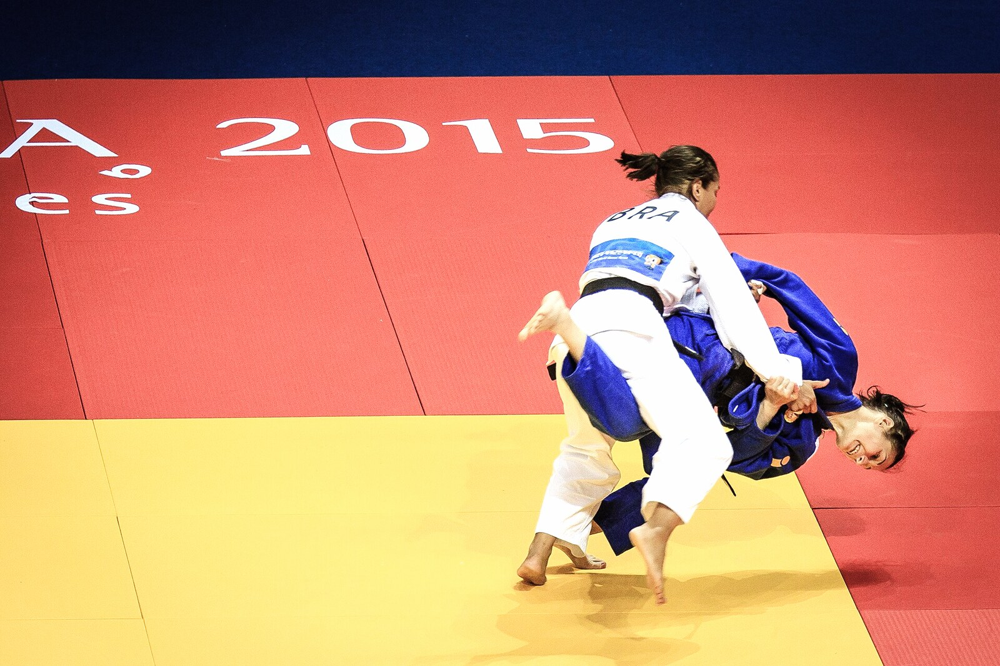

BJJ · Concept
Drilling
Drilling is structured repetition of techniques with a cooperating partner—mechanics first—so your rolling is not guesswork.
What Is Drilling?
Drilling is the classroom: you know the starting grips, the finish, and the reset. It isolates a pass, sweep, or escape so your nervous system can store it.
Modern coaching often prefers shorter, focused sets with attention to details over hundred-rep zombies. Pair drilling with conceptual study of pillars like guard passing and closed guard.
Without drilling, rolling becomes athletic scrambling with few reliable tools.
Elite rooms treat drilling as deliberate practice: one detail per set, immediate feedback, and enough rest to keep shapes honest. That mindset scales from white belt hip escapes to black belt microscopic grip changes. Use it to feed positional sparring rather than as endless busywork.
How Drilling Works
Start cooperative; correct broken postures each rep.
Add “alive” drills: partner offers specific common defenses.
Alternate sides; note asymmetries.
Finish blocks with a few positional rounds using the same starting point.
End each drill block by naming the failure mode you still see—then design the next set to attack that failure.

Gi vs No-Gi
Gi drilling: include grip breaks and collar depths.
No-gi drilling: emphasize body connections and head position.
Film a set occasionally—your memory lies.
What Does It Look Like in Practice?
Alex drills knee-cut entries for five focused minutes, then positional rounds from the same pass start.
Jordan’s partner offers posture in closed guard each rep so attacks stay honest.
Sam solo-drills hip escapes between classes to keep recovery active.
Types / Variations
Cooperative reps
Standard technique practice.
Progressive resistance
Defenses layered in.
Chain drilling
A to B to C sequences.
Solo movement
Shrimp, technical stand-up, shadow passing.
Entries, Counters, and Escapes
Entries: after instruction, before full sparring.
Counters to boredom: constrain goals, switch partners, add timers.
Escapes from “only drill, never roll”: schedule live tests weekly.
Drilling vs Positional Sparring
| Factor | Drilling | Positional sparring |
|---|---|---|
| Script | High | Low start / live finish |
| Resistance | Coached layers | Fully live within constraints |
| Best for | Mechanics | Timing under stress |
| Next step | Positional rounds | Open rolling |
Special Considerations
IBJJF, ADCC, and sport context
Drilling itself is training methodology, not a scored rule—but competition athletes drill the positions their rule set pays for. See points and ADCC.
Safety
Even cooperative reps can tweak necks—communicate. When resistance rises, taps apply.
Common mistakes
- Racing reps with garbage posture.
- Only drilling favorites.
- Never adding resistance, then blaming “it doesn’t work when rolling.”
- Drilling submissions at full speed on day-one partners.
FAQ
Questions we hear on the mats, in forums, and under instructional videos—answered in Martial Index voice.
What is drilling in BJJ?
Repeated technical practice with a partner under constraints.
How many reps?
Enough for clean mechanics—quality first.
Drilling vs sparring?
Sparring is open live; drilling is structured.
Should I drill both sides?
Yes over time.
Can beginners drill hard techniques?
With control and coaching—yes.
Solo drills useful?
Yes for movement patterns.
How does it connect to belts?
Higher belts often drill fewer, sharper details.
The Bottom Line
Drilling installs the software. Positional sparring and rolling run it under load. Skip none of the stack.